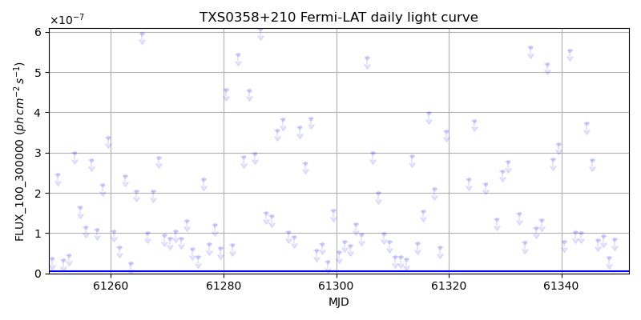
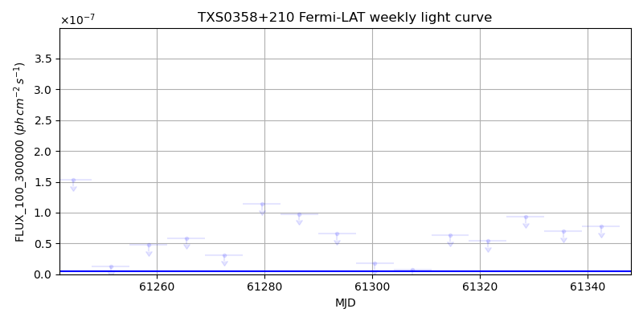
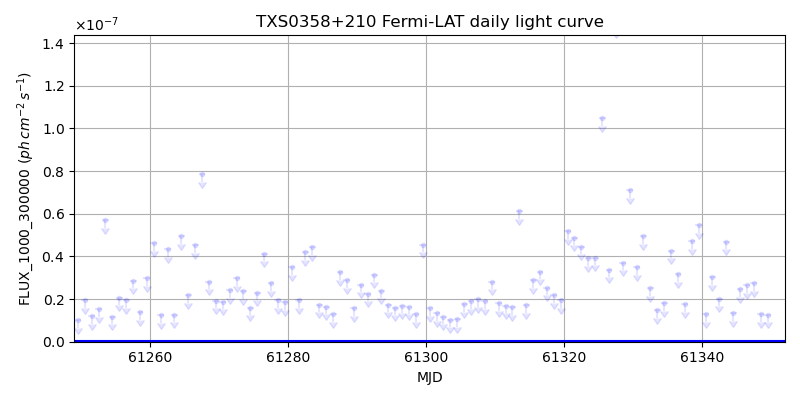
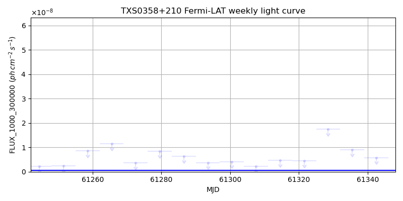

LAT Lightcurve site: https://fermi.gsfc.nasa.gov/ssc/data/access/lat/msl_lc/source/TXS_0358p210
NED: Query
Time of last update of this page: UT: 2026-11-06 16:14 (MJD: 61350.677)
| Property | Value |
|---|---|
| R.A. | 4:01:45.12 |
| Dec. | 21:10:30.0 |
| z | 0.834 |
| 3FGL SpectrumType | PowerLaw |
| 3FGL PL Index | 2.35 |
| 3FGL Flux_100_300000 | 1.12e-08 1 / (s cm2) |
| 3FGL Flux_1000_300000 | 4.97e-10 1 / (s cm2) |
| 3FGL Flux >200 GeV | 3.85e-13 1 / (s cm2) |
| 3FGL Extrap. Crab >200 GeV | 0.00 |
| 3FGL Flux After EBL Absorption >200GeV | 1.24e-14 1 / (s cm2) |
| 3FGL EBL Crab Fraction >200GeV | 0.00 |

| MJD | dMJD | Flux | dFlux | Frac3FGL | FracCrab>200GeV | EBLFracCrab>200GeV |
|---|---|---|---|---|---|---|
| 61345.50 | 0.50 | 2.81e-07 | 0.00e+00 | 0.00 | 0.00 | 0.00 |
| 61346.50 | 0.50 | 8.30e-08 | 0.00e+00 | 0.00 | 0.00 | 0.00 |
| 61347.50 | 0.50 | 9.27e-08 | 0.00e+00 | 0.00 | 0.00 | 0.00 |
| 61348.50 | 0.50 | 3.86e-08 | 0.00e+00 | 0.00 | 0.00 | 0.00 |
| 61349.50 | 0.50 | 8.51e-08 | 0.00e+00 | 0.00 | 0.00 | 0.00 |

| MJD | dMJD | Flux | dFlux | Frac3FGL | FracCrab>200GeV | EBLFracCrab>200GeV |
|---|---|---|---|---|---|---|
| 61314.50 | 3.50 | 6.36e-08 | 0.00e+00 | 0.00 | 0.00 | 0.00 |
| 61321.50 | 3.50 | 5.41e-08 | 0.00e+00 | 0.00 | 0.00 | 0.00 |
| 61328.50 | 3.50 | 9.29e-08 | 0.00e+00 | 0.00 | 0.00 | 0.00 |
| 61335.50 | 3.50 | 6.97e-08 | 0.00e+00 | 0.00 | 0.00 | 0.00 |
| 61342.50 | 3.50 | 7.76e-08 | 0.00e+00 | 0.00 | 0.00 | 0.00 |

| MJD | dMJD | Flux | dFlux | Frac3FGL | FracCrab>200GeV | EBLFracCrab>200GeV |
|---|---|---|---|---|---|---|
| 61345.50 | 0.50 | 2.46e-08 | 0.00e+00 | 0.00 | 0.00 | 0.00 |
| 61346.50 | 0.50 | 2.66e-08 | 0.00e+00 | 0.00 | 0.00 | 0.00 |
| 61347.50 | 0.50 | 2.75e-08 | 0.00e+00 | 0.00 | 0.00 | 0.00 |
| 61348.50 | 0.50 | 1.31e-08 | 0.00e+00 | 0.00 | 0.00 | 0.00 |
| 61349.50 | 0.50 | 1.27e-08 | 0.00e+00 | 0.00 | 0.00 | 0.00 |

| MJD | dMJD | Flux | dFlux | Frac3FGL | FracCrab>200GeV | EBLFracCrab>200GeV |
|---|---|---|---|---|---|---|
| 61314.50 | 3.50 | 4.68e-09 | 0.00e+00 | 0.00 | 0.00 | 0.00 |
| 61321.50 | 3.50 | 4.39e-09 | 0.00e+00 | 0.00 | 0.00 | 0.00 |
| 61328.50 | 3.50 | 1.75e-08 | 0.00e+00 | 0.00 | 0.00 | 0.00 |
| 61335.50 | 3.50 | 8.95e-09 | 0.00e+00 | 0.00 | 0.00 | 0.00 |
| 61342.50 | 3.50 | 5.76e-09 | 0.00e+00 | 0.00 | 0.00 | 0.00 |
--------------------------------------------------------- Using user-supplied coords: 4:01:45.12 21:10:30.0 2000 --------------------------------------------------------- FLWO UT night of: 2026-11-07 Local Sid. @ Midnight: 02:42 Sunset (-15.0) (local, UT): 18:39 01:39 Sunrise (-15.0) (local, UT): 05:36 12:36 Moonrise (local, UT): 05:16 12:16 Moonset (local, UT): Moon phase: 0.04 --------------------------------------------------------- AzTime LSID UT Obj_el Obj_az Mn_el Mn_az Sep. --------------------------------------------------------- 18:39 21:20 01:39 2.7 66.4 -35.5 278.9 135.3 19:09 21:50 02:09 8.5 70.1 -41.6 283.5 135.6 19:39 22:20 02:39 14.5 73.7 -47.5 288.8 135.9 20:09 22:50 03:09 20.7 77.1 -53.3 295.3 136.3 20:39 23:20 03:39 26.9 80.5 -58.7 303.4 136.6 21:09 23:50 04:09 33.3 84.0 -63.5 313.9 137.0 21:39 00:20 04:39 39.7 87.6 -67.5 328.0 137.3 22:09 00:50 05:09 46.1 91.5 -70.0 346.2 137.7 22:39 01:20 05:39 52.4 95.9 -70.5 6.9 138.0 23:09 01:51 06:09 58.8 101.3 -68.8 26.6 138.4 23:39 02:21 06:39 64.9 108.3 -65.4 42.5 138.7 00:09 02:51 07:09 70.8 118.5 -60.9 54.4 139.1 00:39 03:21 07:39 76.0 135.4 -55.8 63.5 139.4 01:09 03:51 08:09 79.2 164.8 -50.2 70.6 139.8 01:39 04:21 08:39 78.8 202.3 -44.4 76.4 140.1 02:09 04:51 09:09 75.0 228.8 -38.4 81.4 140.4 02:39 05:21 09:39 69.7 243.9 -32.4 85.8 140.8 03:09 05:51 10:09 63.7 253.3 -26.3 89.9 141.1 03:39 06:21 10:39 57.5 259.9 -20.2 93.7 141.4 04:09 06:51 11:09 51.1 265.0 -14.2 97.5 141.7 04:39 07:21 11:39 44.8 269.3 -8.1 101.2 141.9 05:09 07:52 12:09 38.4 273.1 -1.2 105.0 142.2 05:36 08:19 12:36 32.6 276.4 3.4 108.6 142.4 --------------------------------------------------------- Dark hours >55 deg.: 5.00 srcstart (UT): 2026-11-07 05:51 srcend (UT): 2026-11-07 10:50